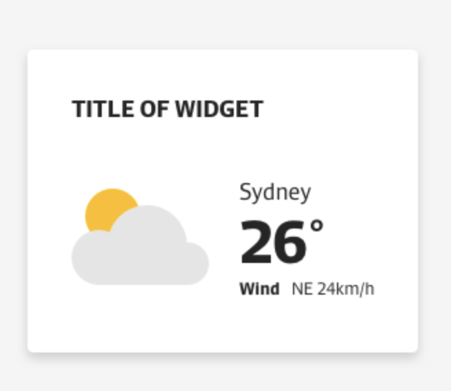

The purpose of this exercise is for us to get a sense of your ability to accurately translate a design into well written, semantic HTML/CSS and how you would approach designing and implementing a front end solution for a simple JavaScript widget.
There is no time limit for this test, but we expect most applicants to complete the requirements in roughly 3-4 hours.
You should not use any framework or library for the CSS
If you make any assumptions about requirements, or use any online resources to solve a problem, please make note of these somewhere obvious inside the solution (e.g. code comments).
Your solution will be evaluated internally by your potential co-workers. You should expect a response from us within two business days.
Using the design below, create a “weather widget” Shortcode that allows editors to set up a widget inside of posts or pages.
The plugin must create a Shortcode to be used by the editors. This Shortcode must include the following attributtes:
The widget itself should be a piece of JavaScript that reads the end user’s current location using navigator.geolocation,
and retrieves the current weather conditions for that location using the Open Weather Map API.
The data the widget displays is determined by the attributes in the Shortcode.
Focus on accurately translating the design into semantic, accessible HTML/CSS before moving onto the JavaScript functionality.
Follow the WordPress standars to create the plugin:
All acceptance criteria should be met (to the best of your ability and time available). A link to your repo should be sent to: pauline.grech@pedestriangroup.com.au